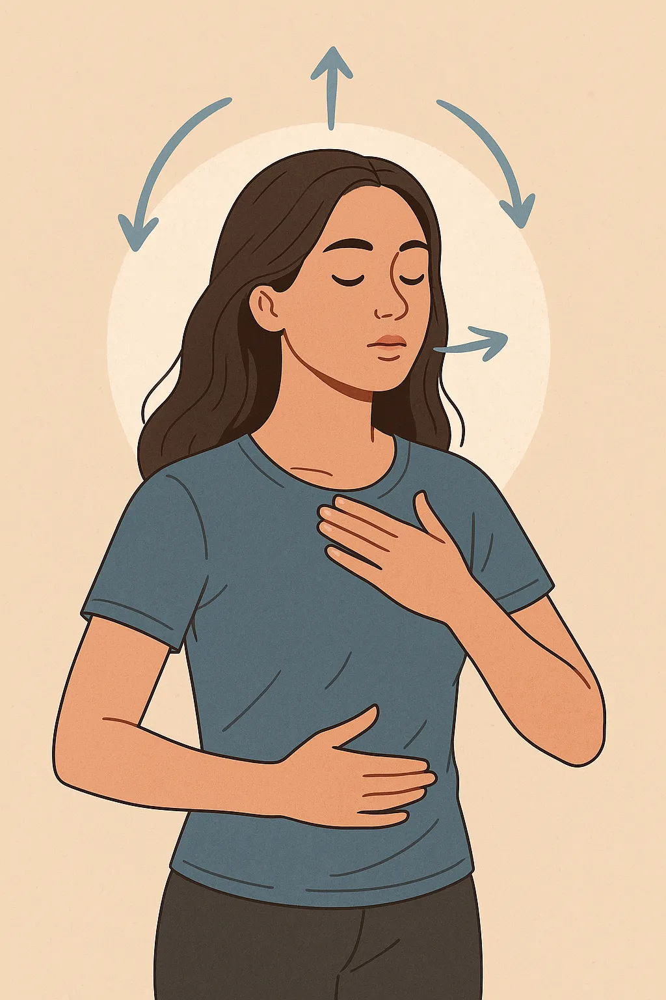
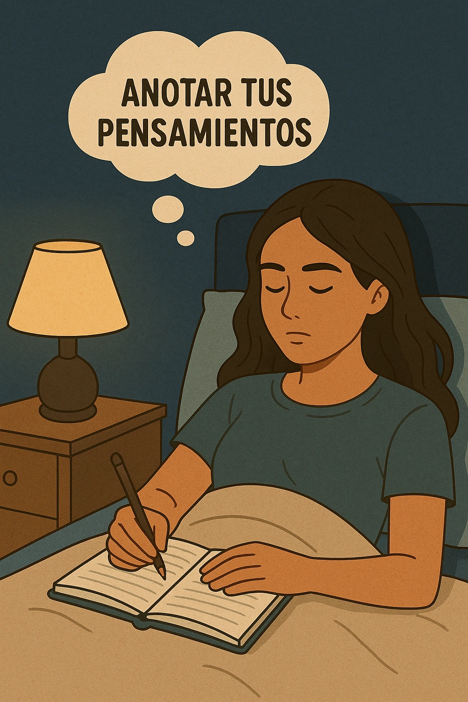
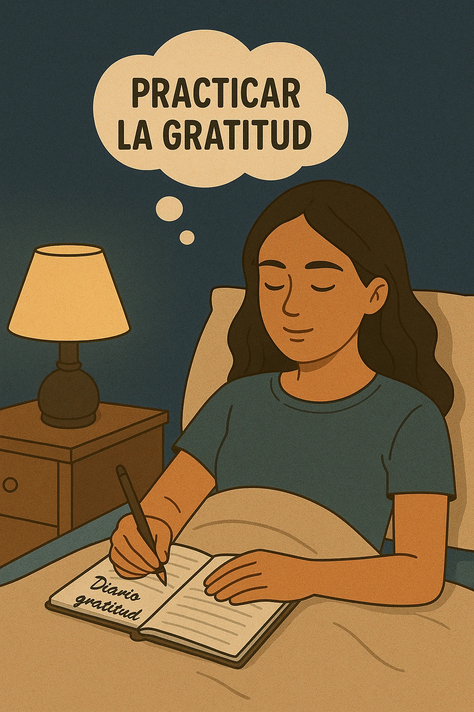

Cómo dejar de sobrepensar por las noches: técnicas prácticas de bienestar mental
Introducción: El peso de la mente inquieta durante la noche
Quedarse despierto dando vueltas a los mismos pensamientos una y otra vez es algo que muchas personas experimentan cada noche. Este hábito mental, conocido como sobrepensar, roba horas de sueño, merma la energía y alimenta la ansiedad. Aprender cómo dejar de sobrepensar por las noches no solo mejora la calidad del descanso, sino que también fortalece el bienestar mental. En este artículo descubrirás estrategias prácticas, simples y eficaces para silenciar la mente y dormir profundamente.
Causas comunes del sobrepensamiento nocturno
Estrés y ansiedad acumulados durante el día
Durante el día estamos ocupados, pero la mente guarda pendientes. Al llegar la noche, surgen preocupaciones acumuladas y pensamientos sin resolver.
Preocupaciones sobre el futuro o el pasado
Revivir situaciones, anticipar problemas o analizar errores pasados mantiene la mente atrapada en bucles interminables.
Uso excesivo de pantallas antes de dormir
El exceso de luz azul y el contenido estimulante afectan la relajación y retrasan la conciliación del sueño.
Impactos negativos del sobrepensamiento en la salud mental y física
El sobrepensamiento prolongado causa insomnio, fatiga, estrés, irritabilidad y menor productividad. Con el tiempo puede contribuir a problemas de ansiedad o depresión si no se aborda.
Técnicas de relajación mental para calmar la mente
Práctica de la respiración consciente
Dedica unos minutos a inhalar y exhalar profundamente. Prueba la técnica 4-7-8: inhala 4 segundos, retén 7, exhala 8. Relaja cuerpo y mente antes de dormir.
Meditación guiada para principiantes
Usa audios o apps de meditación nocturna. Aprende a observar tus pensamientos sin engancharte a ellos.
Técnica del diario de pensamientos
Escribe lo que ronda en tu cabeza. Liberar preocupaciones en papel evita que vuelvan en bucle en la cama.
Rutinas nocturnas para evitar el sobrepensamiento
Crear un ambiente propicio para el sueño
Habitación oscura, temperatura adecuada, sin ruidos molestos. Usa cortinas blackout, tapones o ruido blanco si es necesario.
Establecer horarios fijos para acostarse y levantarse
La regularidad en los horarios entrena tu reloj biológico. Esto reduce el insomnio y la fatiga diurna.
Evitar dispositivos electrónicos antes de dormir
Desconéctate 30-60 minutos antes. Lee, escucha música suave o toma una ducha relajante.
Herramientas prácticas para desviar la mente
Lectura ligera o audiolibros relajantes
Un libro liviano o audiolibro con narración calmada ayuda a enfocar la mente en una historia sencilla.
Ejercicios de gratitud antes de dormir
Anota tres cosas buenas de tu día. Esto entrena tu mente para enfocarse en lo positivo.
Terapias y ayuda profesional: cuándo buscar apoyo
Si el sobrepensamiento es crónico o causa insomnio severo, busca ayuda de un psicólogo. La terapia cognitivo-conductual es una opción muy eficaz. Explora recursos como BetterHelp o centros de salud mental en tu ciudad.
Preguntas frecuentes sobre cómo dejar de sobrepensar por las noches
¿Qué es el sobrepensamiento nocturno?
Es un patrón de pensamientos repetitivos antes de dormir que impide relajarse y conciliar el sueño.
¿Cómo puedo calmar la mente rápidamente?
Respira profundo, haz meditación guiada o escucha sonidos relajantes.
¿El ejercicio físico ayuda?
Sí. Hacer ejercicio diario libera tensión acumulada y favorece un sueño más profundo.
¿Qué alimentos debo evitar?
Evita cafeína, alcohol y comidas copiosas antes de acostarte.
¿Qué hacer si me despierto y no puedo dormir?
Levántate, realiza una actividad tranquila y vuelve a la cama cuando tengas sueño.
¿Cuándo buscar ayuda profesional?
Si el problema persiste por semanas y afecta tu vida diaria, consulta a un especialista.
Conclusión: Cultivar el bienestar mental de forma constante
Dejar de sobrepensar por las noches requiere paciencia y práctica diaria. Implementa estas técnicas, crea hábitos saludables y cuida tu mente como cuidas tu cuerpo. Dormir bien es clave para vivir mejor.